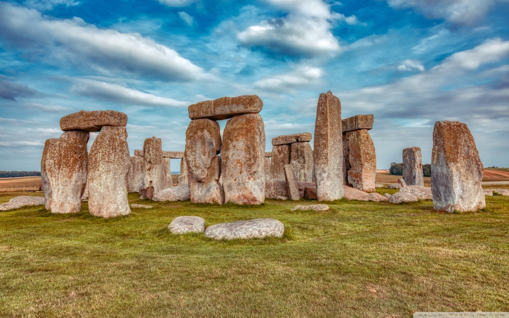
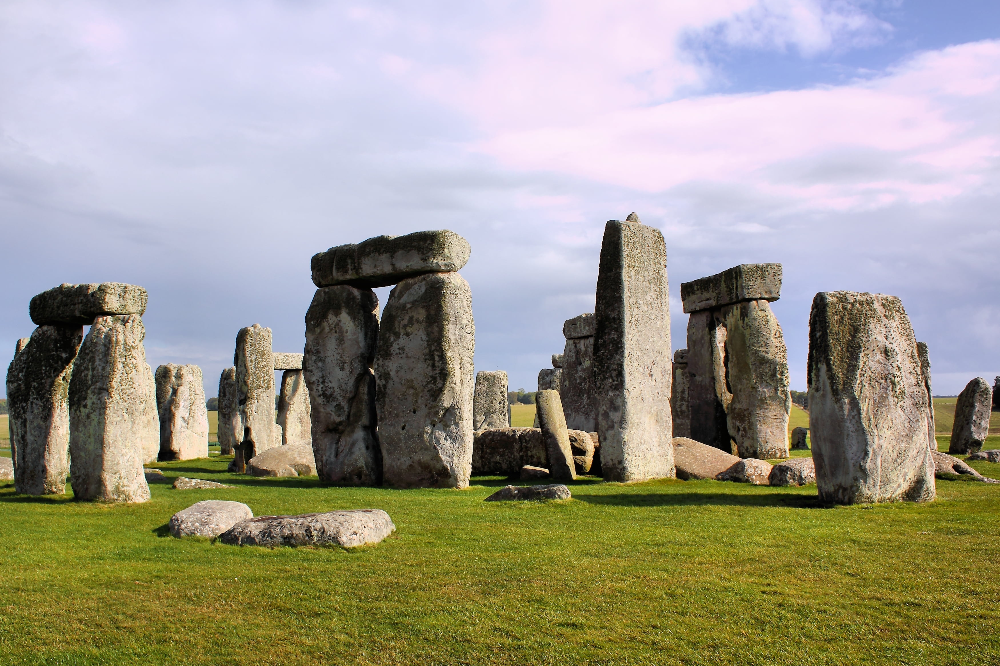

Stonehenge
Stonehenge is a prehistoric monument in Wiltshire with mysterious origins. It's over 4,000 years old and a World Heritage Site.

Stonehenge is one of the most mysterious prehistoric monuments in the world, located in Wiltshire, England. Built around 2500 BC, the massive stone circle is thought to have been constructed over several phases and may have served as a ceremonial site, burial ground, or astronomical observatory.
The origin of the stones and their transportation is still debated. Some of the stones, known as bluestones, were transported over 150 miles from Wales, a feat considered extraordinary given the lack of modern tools or machinery. This has fueled theories ranging from human ingenuity to the involvement of mythical beings or aliens.
Each year, Stonehenge attracts thousands of visitors during the summer and winter solstices. During these times, the sun aligns perfectly with specific stones, suggesting a deep connection to the cycles of the sun. This alignment adds to the monument’s spiritual and cultural significance for both ancient and modern societies.
Back to Menu